Generated: 2026-03-10 16:16

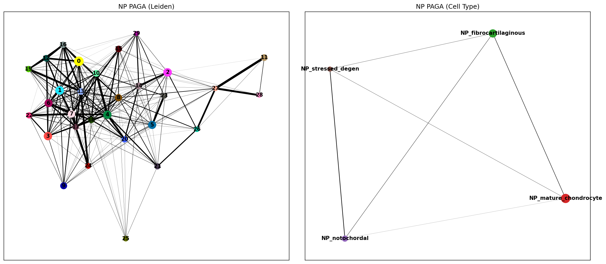

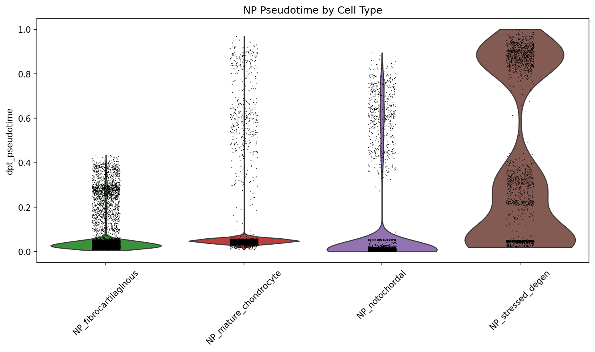

| Test | Statistic | P-value | N |
|---|---|---|---|
| pseudotime_vs_condition_ordinal | rho=-0.151 | 7.5e-253 | 50000 |
| pseudotime_healthy_vs_degenerated | U=217706720 | 7.3e-05 | 42545 |
| pseudotime_vs_condition_NP_fibrocartilaginous | rho=0.193 | 1.0e-136 | 16403 |
| pseudotime_vs_condition_NP_mature_chondrocyte | rho=-0.207 | 2.6e-259 | 26957 |
| pseudotime_vs_condition_NP_notochordal | rho=-0.283 | 2.6e-85 | 4597 |
| pseudotime_vs_condition_NP_stressed_degen | rho=-0.322 | 1.8e-50 | 2043 |
| Gene | rho | padj | Program |
|---|---|---|---|
| LGALS1 | -0.573 | 0.0e+00 | late_down |
| PRSS23 | -0.538 | 0.0e+00 | late_down |
| RNASEK | -0.536 | 0.0e+00 | late_down |
| TMSB10 | -0.508 | 0.0e+00 | late_down |
| VIM | -0.505 | 0.0e+00 | late_down |
| C12orf75 | -0.491 | 0.0e+00 | late_down |
| S100A6 | -0.482 | 0.0e+00 | late_down |
| THY1 | -0.480 | 0.0e+00 | late_down |
| FTH1 | -0.477 | 0.0e+00 | late_down |
| TMSB4X | -0.474 | 0.0e+00 | late_down |
| TRAPPC5 | -0.467 | 0.0e+00 | late_down |
| MRPS24 | -0.465 | 0.0e+00 | late_down |
| EIF4A1 | -0.463 | 0.0e+00 | late_down |
| MGST1 | -0.459 | 0.0e+00 | late_down |
| RPL17 | -0.458 | 0.0e+00 | late_down |
| CD63 | -0.456 | 0.0e+00 | late_down |
| CAMK2N1 | -0.453 | 0.0e+00 | late_down |
| RPS27L | -0.449 | 0.0e+00 | late_down |
| CALD1 | -0.449 | 0.0e+00 | late_down |
| ITGB1 | -0.448 | 0.0e+00 | late_down |

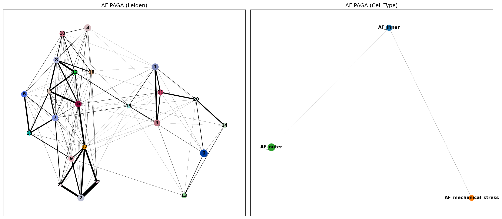
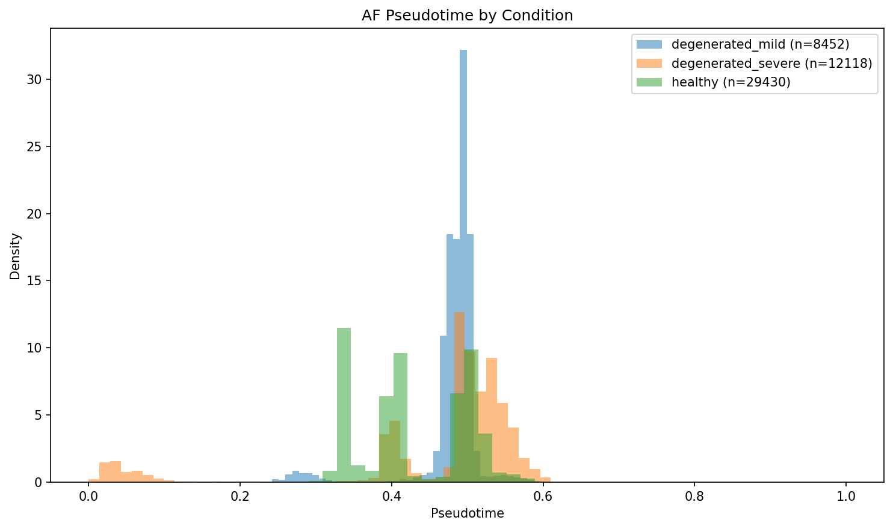
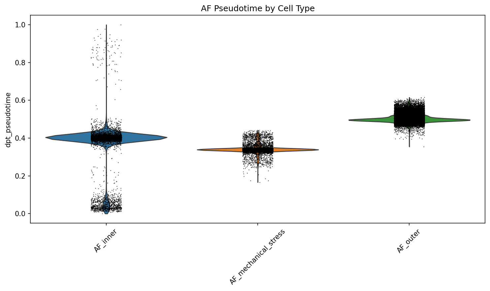
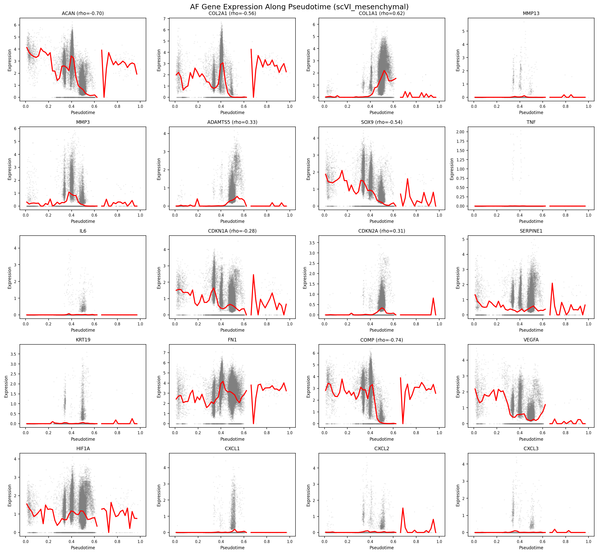
| Test | Statistic | P-value | N |
|---|---|---|---|
| pseudotime_vs_condition_ordinal | rho=0.325 | 0.0e+00 | 50000 |
| pseudotime_healthy_vs_degenerated | U=192129376 | 0.0e+00 | 50000 |
| pseudotime_vs_condition_AF_inner | rho=-0.315 | 2.5e-273 | 11967 |
| pseudotime_vs_condition_AF_outer | rho=0.118 | 8.2e-92 | 29318 |
| pseudotime_vs_condition_AF_mechanical_stress | rho=-0.286 | 3.1e-164 | 8715 |
| Gene | rho | padj | Program |
|---|---|---|---|
| FGFBP2 | -0.808 | 0.0e+00 | late_down |
| SERPINA1 | -0.777 | 0.0e+00 | late_down |
| COMP | -0.736 | 0.0e+00 | late_down |
| PRELP | -0.729 | 0.0e+00 | late_down |
| MT1G | -0.723 | 0.0e+00 | late_down |
| MGP | -0.712 | 0.0e+00 | late_down |
| MT1X | -0.710 | 0.0e+00 | late_down |
| ACAN | -0.703 | 0.0e+00 | late_down |
| CYTL1 | -0.701 | 0.0e+00 | late_down |
| APOD | -0.698 | 0.0e+00 | late_down |
| MIA | -0.692 | 0.0e+00 | late_down |
| CHAD | -0.682 | 0.0e+00 | late_down |
| S100B | -0.682 | 0.0e+00 | late_down |
| CALD1 | 0.681 | 0.0e+00 | late_up |
| RGCC | -0.678 | 0.0e+00 | late_down |
| COL9A3 | -0.668 | 0.0e+00 | late_down |
| CLEC3A | -0.665 | 0.0e+00 | late_down |
| TMSB4X | 0.658 | 0.0e+00 | late_up |
| H3F3B | -0.629 | 0.0e+00 | late_down |
| COL1A2 | 0.623 | 0.0e+00 | late_up |
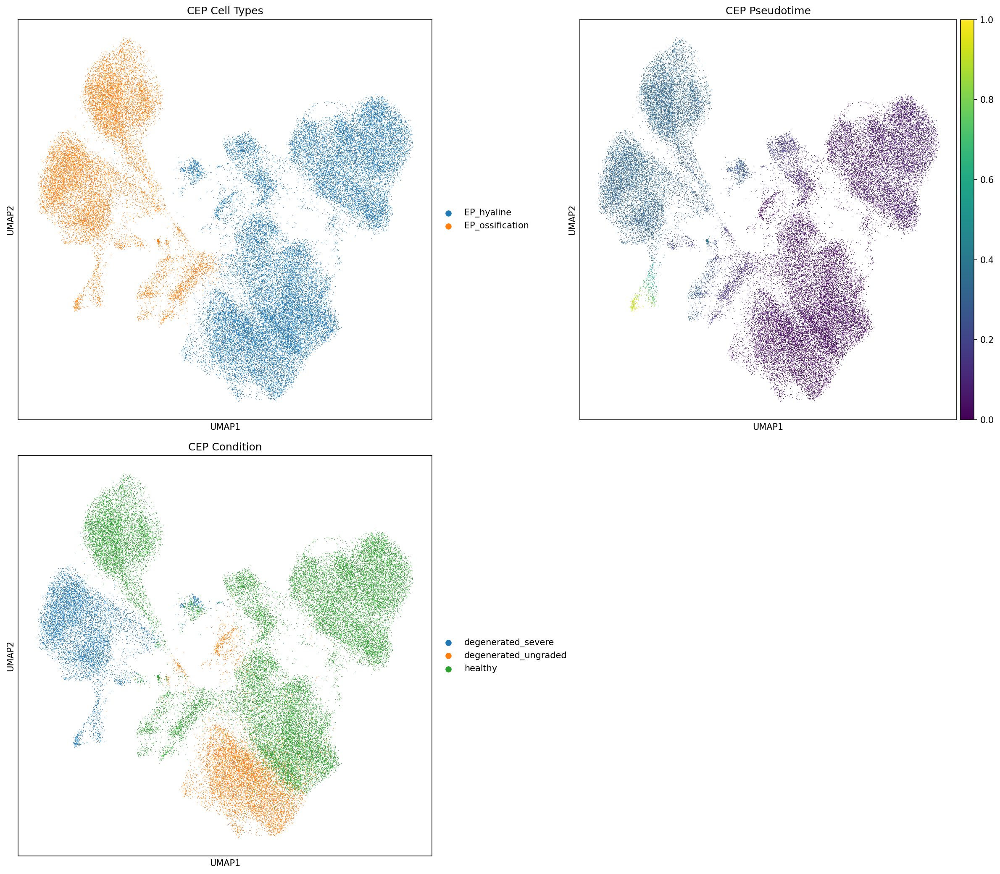
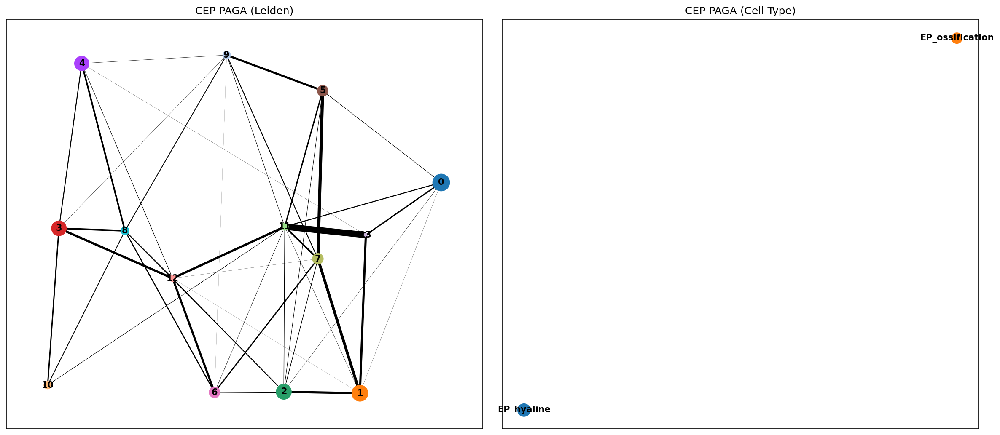
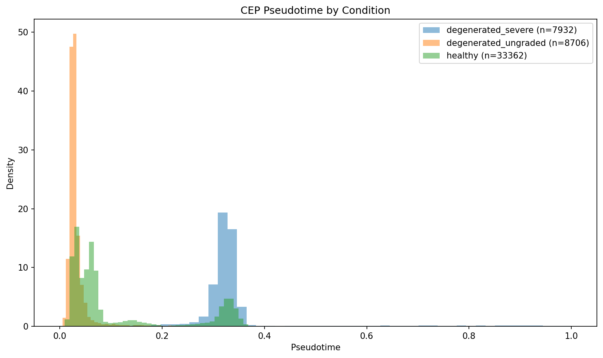
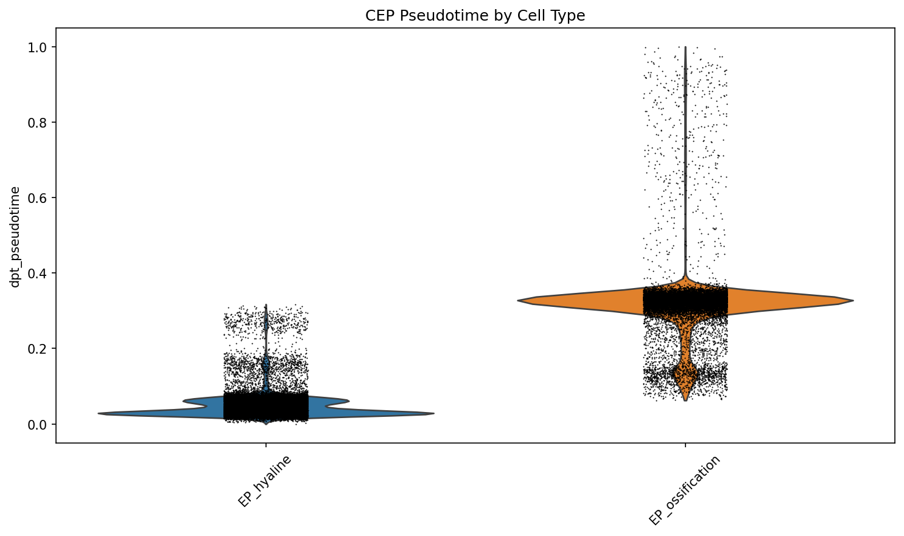
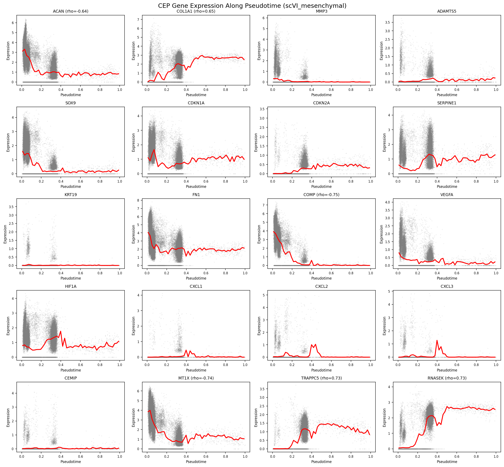
| Test | Statistic | P-value | N |
|---|---|---|---|
| pseudotime_vs_condition_ordinal | rho=0.135 | 7.3e-201 | 50000 |
| pseudotime_healthy_vs_degenerated | U=276318656 | 4.2e-01 | 50000 |
| pseudotime_vs_condition_EP_hyaline | rho=-0.431 | 0.0e+00 | 33776 |
| pseudotime_vs_condition_EP_ossification | rho=0.120 | 3.6e-53 | 16224 |
| Gene | rho | padj | Program |
|---|---|---|---|
| COMP | -0.753 | 0.0e+00 | late_down |
| MT1X | -0.737 | 0.0e+00 | late_down |
| TRAPPC5 | 0.730 | 0.0e+00 | late_up |
| RNASEK | 0.730 | 0.0e+00 | late_up |
| CLU | -0.729 | 0.0e+00 | late_down |
| EEF1G | 0.727 | 0.0e+00 | late_up |
| NME2 | 0.718 | 0.0e+00 | late_up |
| FTH1 | 0.715 | 0.0e+00 | late_up |
| NEK10 | 0.715 | 0.0e+00 | late_up |
| ATP6V0C | 0.714 | 0.0e+00 | late_up |
| CA12 | 0.713 | 0.0e+00 | late_up |
| MRPS24 | 0.709 | 0.0e+00 | late_up |
| MYOF | 0.707 | 0.0e+00 | late_up |
| EXT1 | 0.704 | 0.0e+00 | late_up |
| PRELP | -0.703 | 0.0e+00 | late_down |
| COL14A1 | 0.702 | 0.0e+00 | late_up |
| FGF13 | 0.700 | 0.0e+00 | late_up |
| PRSS23 | 0.692 | 0.0e+00 | late_up |
| THY1 | 0.687 | 0.0e+00 | late_up |
| BNC2 | 0.686 | 0.0e+00 | late_up |